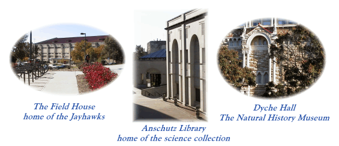

Introduction
H
ello and thank you for visiting this site. I am a Professor in the Department of Geology at the University
of Kansas.
My area of research is in groundwater contamination and remediation, and the development of related
characterization tools. I received a Pearson Medal for excellence in research in the Earth Sciences Department
at the University of Waterloo, and I was a recipient of an NSF Career Grant to study the use of granular iron (zero valent
iron) in groundwater remediation. I invented and patented the cross-injection system for introducing nutrients
to aquifers for bioremediation, and the Point Velocity Probe (PVP) for the direct measurement of groundwater velocity.
I was awarded the a Kemper Fellowship for excellence in teaching.
This website provides an overview of projects, facilities, and publications related to research with which
I have been involved. Please feel free to contact me with any questions.
Students interested in working with me at the University of Kansas can reach me with the contact information below.
Additional information about apply to the hydrogeology program at KU is available at the following
webpage.
I can be contacted by email, using the address at the bottom of this page, or look for
J.F. Devlin on ResearchGate.
The University of Kansas has a beautiful campus and is located in a wonderful university town, the City of Lawrence.
See a little of the campus yourself by
following this link. I have a few annotated pictures of Lawrence
which you can see by following this link.

Contact Info
Dr. J.F. Devlin
Geology Department
University of Kansas
Lindley Hall, Room 217
1475 Jayhawk Blvd.
Lawrence, Kansas 66045-7613
USA
Phone: +1-785-864-4994
Fax: +1-785-864-5276
| E-mail address: |
jfrickdevlin@gmail.com |
|